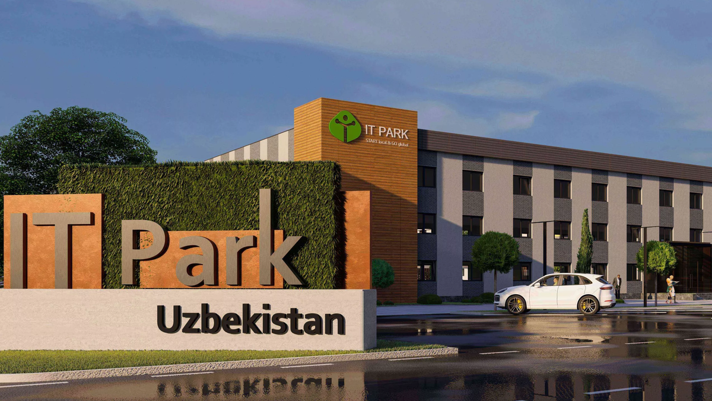

IT-park bugungi kunda 2019-yil 24-iyulda Toshkentda Oʻzbekiston Respublikasidagi birinchi IT Park ochildi. Ushbu qisqa vaqt ichida IT Park 28 yangi startaplar koʻrinishidagi birinchi mevalarini berdi, axborot texnologiyalari sohasida oʻnlab loyihalarni yaratdi, shuningdek, yoshlarni ragʻbatlantirish, ushbu sohaga qiziqishi va aholida kompyuter savodxonligini rivojlantirish uchun treninglar, “vorkshop” va “mitap”lar yaratdi. IT Park – bu IT-kompaniyalar uchun istiqbolli boshlangʻich loyihalarni, tashqi iqtisodiy zonani, shu jumladan ilmiy va taʼlim tashkilotlari bilan integratsiyalashgan holda ishga tushirish va bozorga chiqarishni taʼminlash uchun moʻljallangan obyektlar, bino va inshootlar majmuasi. IT sohasida faol va iqtidorli insonlar buxgalteriya hisobi, yuridik, marketing va taʼlim orqali oʻz gʻoyalarini haqiqiy biznes loyihalariga aylantirish uchun haqiqiy imkoniyatga ega boʻladigan joy.
 Instagram
Instagram Facebook
Facebook Youtube
Youtube +998917772905
+998917772905